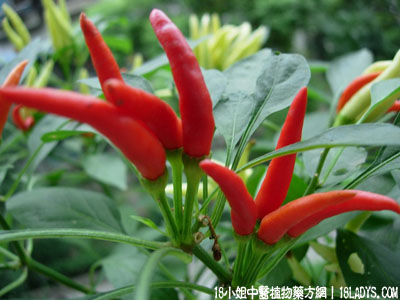

指天椒(中草药名称:指天)(科目:茄科)

植物名：指天椒。
生长环境：本品为直立、多枝灌木状草本，栽培于田间或家园。
分布：广布于全球的温带、热带地区；广州近郊有栽培。
采集期：全年采根，夏采叶，秋采根。
自采地点：家种。
入药部分：果。
性味：性温、味辛。
功能：祛风散寒，开胃消滞，止痛消肿。
主治、用量和用法：1、蛇头缠指，不大红大痛者：生用数枚，加生盐擂烂，外敷；2、蛇咬：干用1两，浸酒1斤。浸20至30天，以陈久更佳，被蛇咬者，内服1至2两，嗜酒者可多饮。并外用棉花蘸此酒，敷伤处。留出一孔以透毒；3、跌打肿痛：用上法浸酒外用。
（根）治脚软无力，方一：用干根5钱至1两，水蚧1至2只，清水煎服。
方二：用干根5钱至1两，红枣十枚，鸡或鸡脚，酒水各半，炖5小时，连服数剂，日服1剂。
（叶）明目：用鲜叶，猪肝适量，煎作羹汤服。
（方歌）祛风散瘀指天椒，跌打肿痛力能消，舌头缠指与蛇咬，浸酒塗敷毒自凋，根煲水蚧疗脚软，叶煎猪肝目更清。